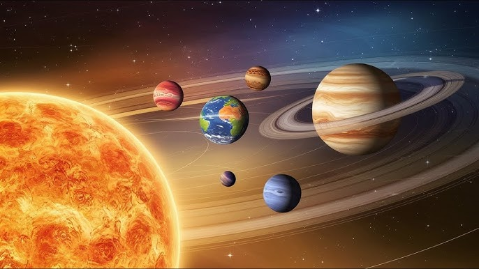
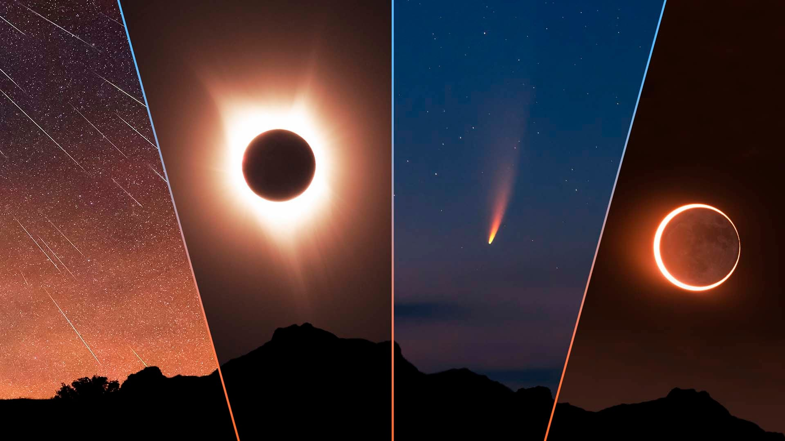

Comece a Explorar

Sistema Solar
Visite os planetas, luas e outros corpos celestes que compõem nosso sistema solar.
Explorar
Galáxias
Explore galáxias espirais, elípticas e irregulares espalhadas pelo universo infinito.

Fenômenos Cósmicos
Descubra buracos negros, supernovas e outros fenômenos impressionantes do universo.